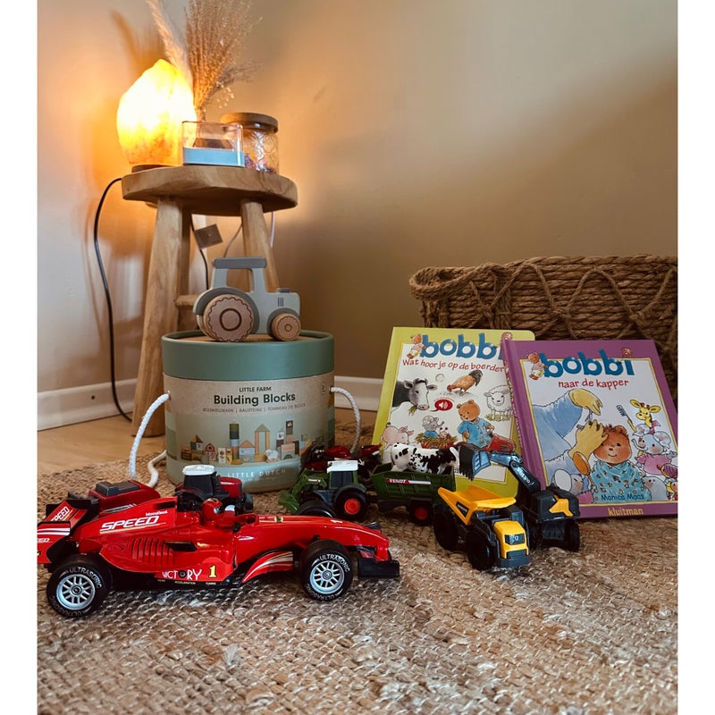
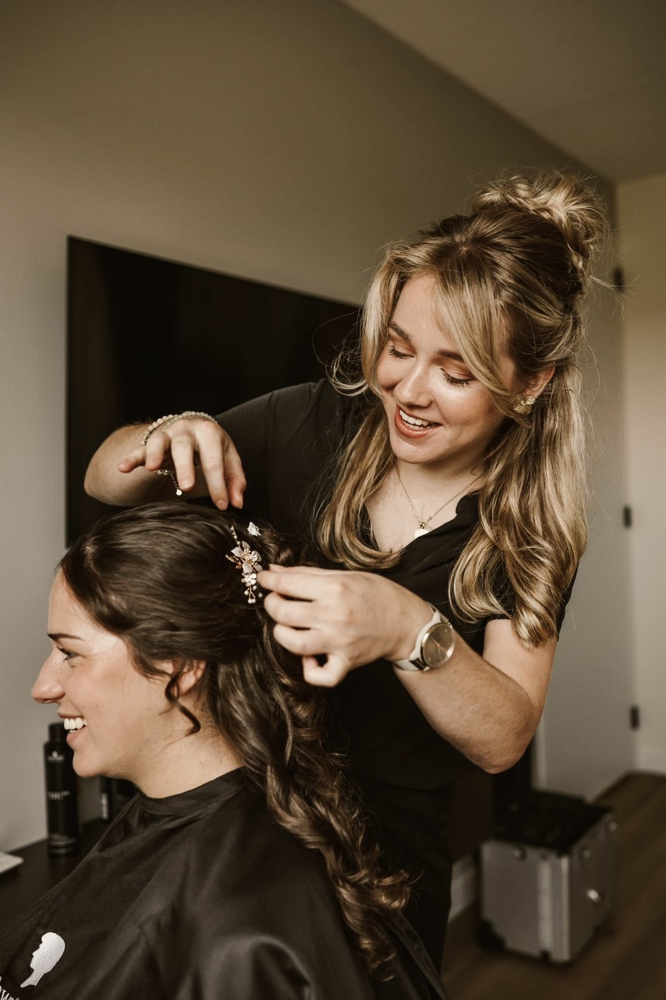
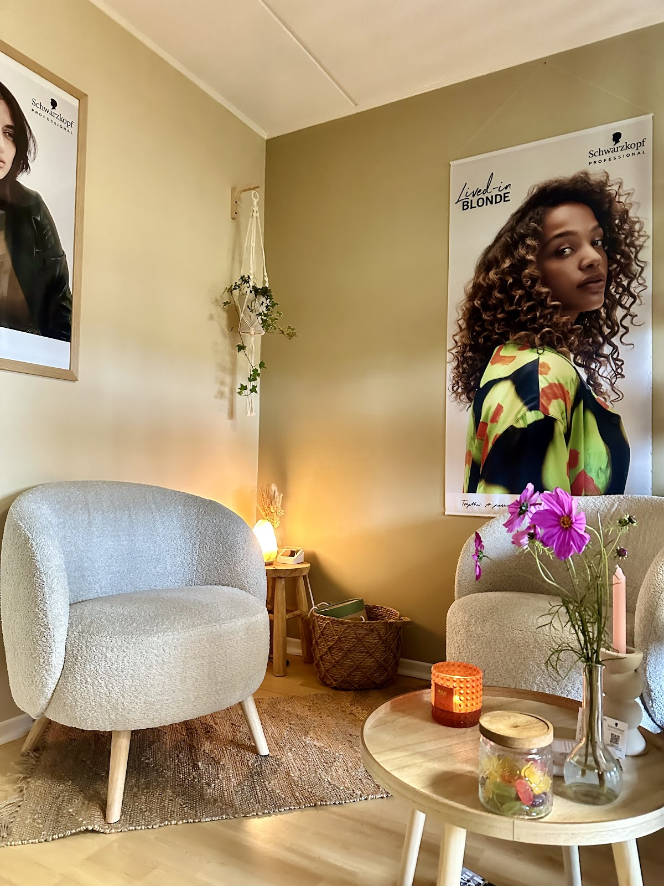
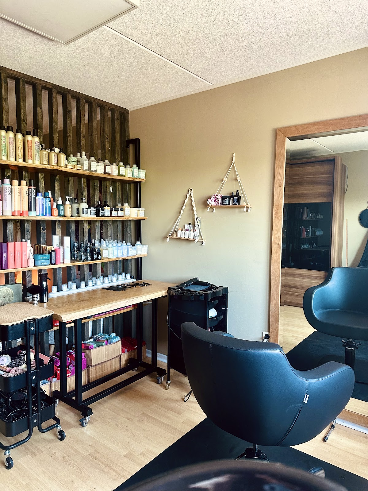
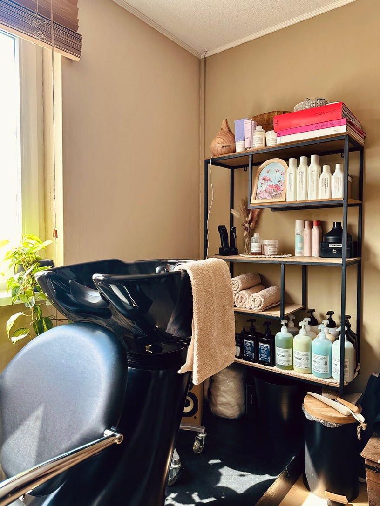
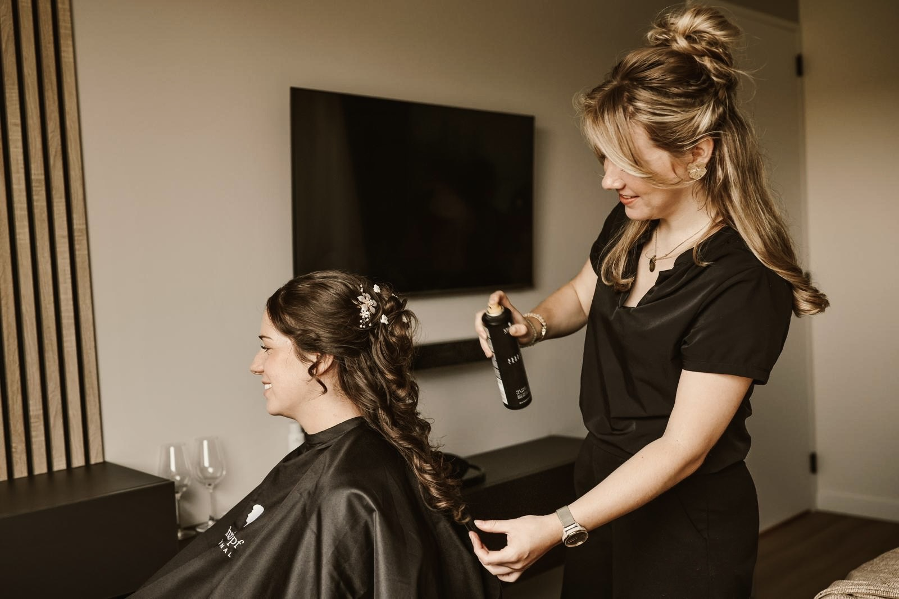
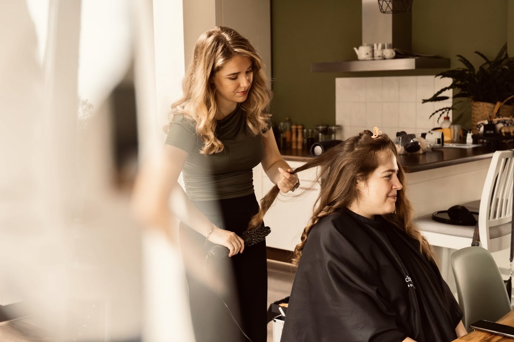
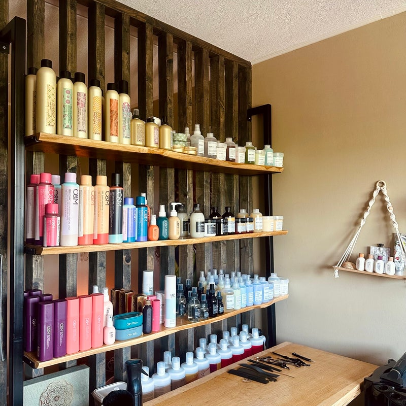

Kinderen? Die zitten hier ook graag.
Er is een hoekje met speelgoed en Bobbi-boekjes, dus wachten is niet erg. Kinderen t/m 12 jaar knippen kost € 23,00.
Kapsalon aan huis in Barlo, Aalten
Bij Indy zit je nooit aan de lopende band. Ze werkt één op één, luistert echt naar wat je wilt en neemt de tijd tot het helemaal goed zit.
5,0 uit 14 Google-reviews

In de salon is er maar één klant tegelijk: jij. Zo is er ruimte voor een goed gesprek, of juist even een moment van stilte. Gewoon tijd voor jezelf.
Indy geeft eerlijk advies, maar luistert eerst naar jouw wensen. Samen kom je tot een kapsel dat helemaal bij je past, zodat je met een glimlach de deur uit gaat.
Ze werkt met natuurlijke en duurzame producten van Davines en O&M, die zacht zijn voor je haar en hoofdhuid.



Duidelijke prijzen, zonder verrassingen. Bij erg lang of dik haar kan er een kleine toeslag bij komen, dat hoor je altijd vooraf.
Erg lang of dik haar: toeslag vanaf € 7,50. Heren: kom je na 8 weken knippen met erg dik haar, dan kan er een toeslag vanaf € 7,50 bij komen.
Kom je alleen voor kleuren of een herstelbehandeling, zonder knippen? Dan komt er een toeslag voor model föhnen bij, vanaf € 10,00. Bruidskapsel met proefsessie en haaraccessoires: prijs in overleg.

Een bruidskapsel maak je niet op de gok. Daarom begint het met een proefsessie, waarin jullie samen kijken wat bij jou, je jurk en je dag past. Ook voor haaraccessoires kun je bij Indy terecht. De prijs bepaal je samen, in overleg.
Bel voor een proefsessie“Ik ben bij Indy gekomen om mijn haar te laten opsteken voor een bruiloft. Het resultaat was nog veel mooier dan ik had verwacht met mij…”
Mijn passie voor haar begon al jong. Vanaf mijn 16e heb ik in verschillende kapsalons gewerkt. Daar heb ik het vak geleerd, en ontdekt wat ik zelf belangrijk vind: geen haastwerk, maar rust en echte aandacht voor iedere klant.
Sinds juni 2023 heb ik mijn eigen salon aan huis in Barlo. Ik blijf cursussen en trainingen volgen, want het kappersvak staat nooit stil. Zo kan ik voor iedereen een kapsel maken dat echt bij je past.
Je bent altijd welkom. Liefs, Indy


Er is een hoekje met speelgoed en Bobbi-boekjes, dus wachten is niet erg. Kinderen t/m 12 jaar knippen kost € 23,00.

Twee merken met natuurlijke ingrediënten en een duurzame visie. Davines uit Italië voor luxe verzorging, O&M uit Australië voor clean beauty en vegan styling.
5,0 uit 14 reviews op Google
“Ik kom al een tijd bij Indy en ze knipt iedere keer weer supergoed! Ik heb vaak veel wensen, maar ze weet er elke keer weer iets moois van te maken. Ze luistert goed, denkt mee en zorgt ervoor dat ik altijd tevreden de deur uit ga. Echt een aanrader!”
“Net bij Indy geweest om mijn haar te laten knippen. Wat een leuke en spontane meid. En wat heeft ze mijn haar mooi geknipt! Ik kom zeker terug Indy 😃 Dank je wel! Echt een aanrader!”
“Ik ga altijd met plezier naar Indy voor het knippen, kleuren en opsteken. Ze weet precies wat bij me past en zorgt er elke keer weer voor dat ik blij de deur uit ga! Vakkundig én gezellig!”
“Afspraak maken ging makkelijk en snel.
Ontvangst vriendelijk, wensen worden goed omgezet in vakkundig knipwerk. Je komt niet weg tot het goed zit en je 100 % tevreden bent.
Aanrader en voor herhaling vatbaar”
Bel Indy voor een afspraak of stuur een mailtje. Op maandag, dinsdag en donderdag kun je tot 's avonds 20:30 terecht.
Hairsalon Brush